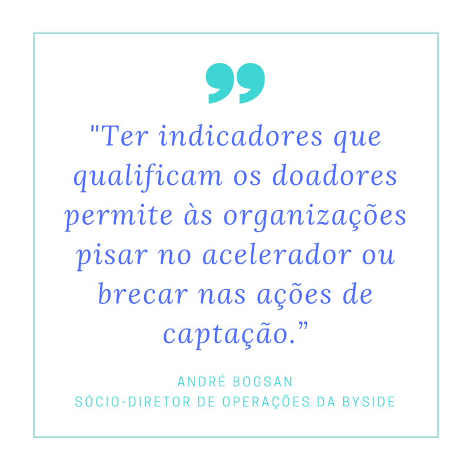
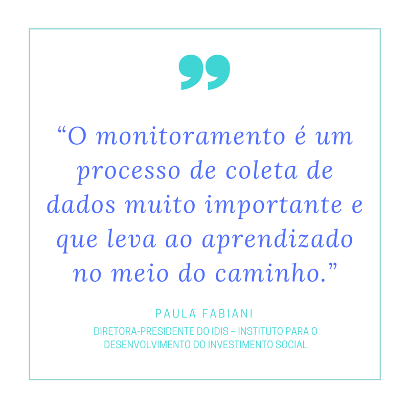
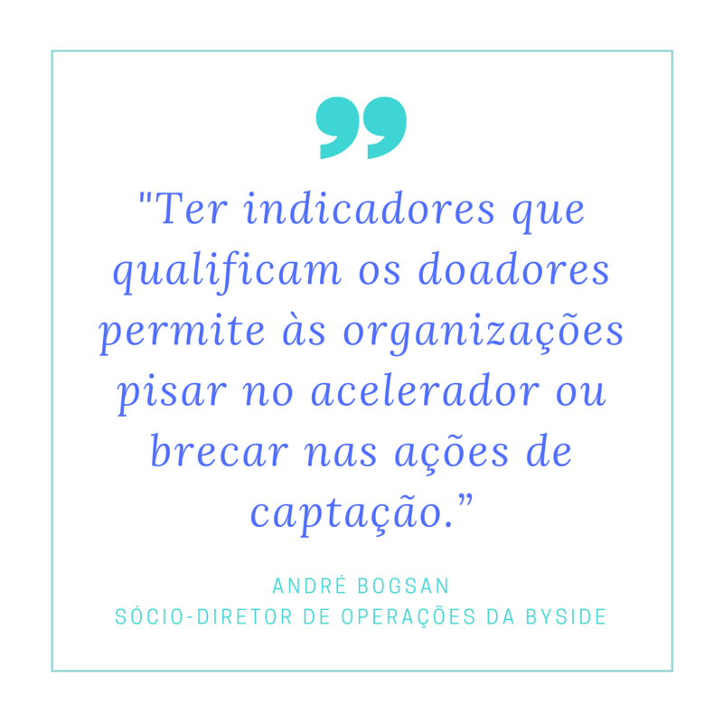
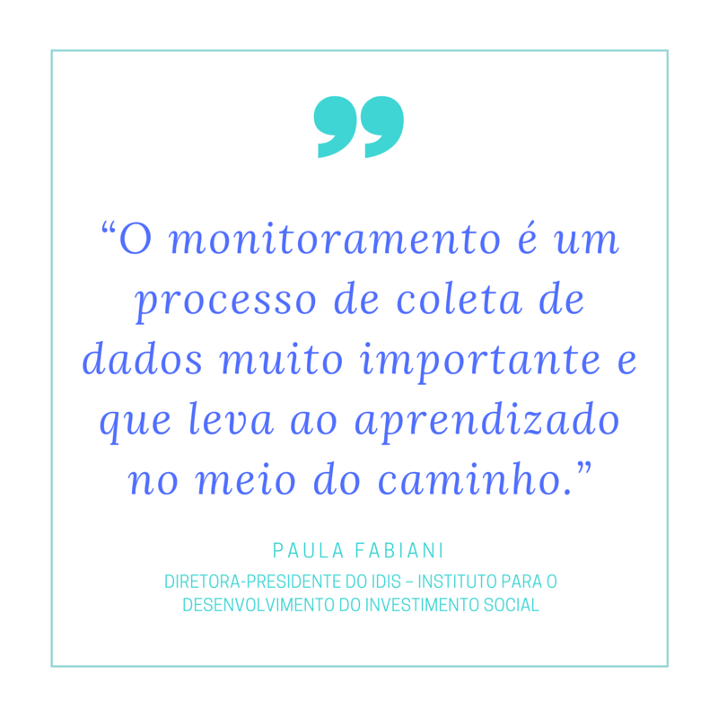

Um captador de recursos eficiente sabe analisar e aprender com os erros
04 de Agosto de 2016 às 12:39
O cuidado e atenção a cada detalhe do processo são cruciais para a captação efetiva de recursos. Além de um plano estratégico bem definido, com investimentos direcionados para um retorno significativo, o monitoramento contínuo e a avaliação são etapas fundamentais para que os erros – comuns a todas as organizações – sejam transformados em aprendizados
A captação de recursos é um processo integrado a diferentes áreas e pessoas de uma organização. Isto porque depende de um bom plano estratégico, plano de ação, comunicação assertiva e relacionamento com os doadores – sejam eles grandes empresas ou institutos, o governo ou pessoas físicas, engajadas com a causa da organização.
Captadores e consultores com experiência de anos e anos no mercado dizem a mesma coisa: tentar faz parte e a mudança durante o processo é vital para o sucesso da ação e retorno dos investimentos. Mas, como saber se a primeira decisão tomada alcançou o seu objetivo? De que maneira é possível obter esses dados que levam a mudanças de rota que impactam diretamente no resultado final?
“O monitoramento é um processo de acompanhamento contínuo das atividades, que vai mostrar com quantas pessoas eu falei, com quem, especificamente, é coleta de dados muito importante e que leva ao aprendizado no meio do caminho”, comenta Paula Fabiani, diretora-presidente do IDIS – Instituto para o Desenvolvimento do Investimento Social. Apesar de afirmar que no Brasil há ainda uma carência de dados, segundo ela, existem, inclusive, ferramentas gratuitas (mesmo que algumas com licença restrita) que podem ser adaptadas e permitem algumas ações que agilizam o processo de registro e análise dos dados.
Victor Graça, gerente executivo da Fundação Abrinq contou que não dispensa o Excel como ferramenta eficaz e prática para esse monitoramento. Fabiani explica que “a análise dessas informações é fundamental para identificar se a captação de recursos tem sido eficiente em retroalimentar o processo de investimento da organização”. Afinal, é preciso investir recursos para captar recursos.
André Bogsan, sócio-diretor de operações da Byside, consultoria especializada na abordagem face to face (contato pessoal) com o público-doador, afirma que “ter indicadores que qualificam os doadores permite às organizações pisar no acelerador ou brecar nas ações de captação”, já que, como explicou Fabiani, “dessa forma você olha com mais profundidade para o processo de captação e vai vendo que uma estratégia está funcionando melhor que outra e pode compreender as razões de ter atingido ou não o resultado”.

Bogsan aponta quais são os dois pontos que um monitoramento não pode, jamais, deixar de mostrar: “Taxa de retenção dos doadores e perda. Existe uma curva natural de perda de doadores no início, mas é fundamental saber o que motiva e o que não motiva as pessoas a doarem para a sua organização” – para ele, o acompanhamento constante e uma análise cuidadosa trarão essas respostas.
Avaliação de resultados X Avaliação de impacto
Diferentemente do monitoramento, “a avaliação é um retrato do que está acontecendo com a organização”, ilustra Bogsan. Saber que o recurso está sendo bem utilizado leva legitimidade para a organização e aumenta a confiança do doador de participação em uma causa que promove boas ações em sua área de atuação.
Fabiani aponta a diferença para a avaliação de resultados – de que maneira estão sendo aplicadas as doações recebidas; e a avaliação de impacto – que revela o que, de fato, mudou na vida do beneficiário. “A avaliação é de crucial importância na devolutiva para a sociedade. Se com indivíduos essa devolutiva acontece por meio de uma prestação de contas geral, não especificamente só da captação de recursos, do ponto do vista do investidor institucional os indicadores quantitativos são mais importantes”, explica.
Ela reforça que “o monitoramento é uma obrigação da organização e acaba reduzindo o preço da avaliação”, já que Fabiani defende: “É importante ter uma avaliação independente, que tenha uma visão não condicionada sobre a própria organização”. Ela destaca: “Se as organizações apresentassem mais avaliações de impacto, conseguiriam tangibilizar melhor para os doadores quais transformações eles estão financiando”.

Bogsan acredita que a avaliação é a maneira que a organização tem para provar onde está sendo investido o dinheiro doado e, “para um bom captador o maior desafio não é o primeiro cheque; é, no ano seguinte, pegar o segundo cheque e ainda maior”, afinal, “todo mundo quer ver o recurso multiplicado. A organização precisa mostrar como potencializou o valor da doação”.
Para tanto, finaliza ele, “o processo de cultivação recorrente desse doador – se mostrar presente em todos os momentos e entender o momento do doador: onde pedir, quando pedir, como pedir, são essenciais para que a doação seja espontânea” e recorrente.
Por Ana Luíza Vastag, da Escola de Notícias
A captação de recursos é um processo integrado a diferentes áreas e pessoas de uma organização. Isto porque depende de um bom plano estratégico, plano de ação, comunicação assertiva e relacionamento com os doadores – sejam eles grandes empresas ou institutos, o governo ou pessoas físicas, engajadas com a causa da organização.
Captadores e consultores com experiência de anos e anos no mercado dizem a mesma coisa: tentar faz parte e a mudança durante o processo é vital para o sucesso da ação e retorno dos investimentos. Mas, como saber se a primeira decisão tomada alcançou o seu objetivo? De que maneira é possível obter esses dados que levam a mudanças de rota que impactam diretamente no resultado final?
“O monitoramento é um processo de acompanhamento contínuo das atividades, que vai mostrar com quantas pessoas eu falei, com quem, especificamente, é coleta de dados muito importante e que leva ao aprendizado no meio do caminho”, comenta Paula Fabiani, diretora-presidente do IDIS – Instituto para o Desenvolvimento do Investimento Social. Apesar de afirmar que no Brasil há ainda uma carência de dados, segundo ela, existem, inclusive, ferramentas gratuitas (mesmo que algumas com licença restrita) que podem ser adaptadas e permitem algumas ações que agilizam o processo de registro e análise dos dados.
Victor Graça, gerente executivo da Fundação Abrinq contou que não dispensa o Excel como ferramenta eficaz e prática para esse monitoramento. Fabiani explica que “a análise dessas informações é fundamental para identificar se a captação de recursos tem sido eficiente em retroalimentar o processo de investimento da organização”. Afinal, é preciso investir recursos para captar recursos.
André Bogsan, sócio-diretor de operações da Byside, consultoria especializada na abordagem face to face (contato pessoal) com o público-doador, afirma que “ter indicadores que qualificam os doadores permite às organizações pisar no acelerador ou brecar nas ações de captação”, já que, como explicou Fabiani, “dessa forma você olha com mais profundidade para o processo de captação e vai vendo que uma estratégia está funcionando melhor que outra e pode compreender as razões de ter atingido ou não o resultado”.

Bogsan aponta quais são os dois pontos que um monitoramento não pode, jamais, deixar de mostrar: “Taxa de retenção dos doadores e perda. Existe uma curva natural de perda de doadores no início, mas é fundamental saber o que motiva e o que não motiva as pessoas a doarem para a sua organização” – para ele, o acompanhamento constante e uma análise cuidadosa trarão essas respostas.
Avaliação de resultados X Avaliação de impacto
Diferentemente do monitoramento, “a avaliação é um retrato do que está acontecendo com a organização”, ilustra Bogsan. Saber que o recurso está sendo bem utilizado leva legitimidade para a organização e aumenta a confiança do doador de participação em uma causa que promove boas ações em sua área de atuação.
Fabiani aponta a diferença para a avaliação de resultados – de que maneira estão sendo aplicadas as doações recebidas; e a avaliação de impacto – que revela o que, de fato, mudou na vida do beneficiário. “A avaliação é de crucial importância na devolutiva para a sociedade. Se com indivíduos essa devolutiva acontece por meio de uma prestação de contas geral, não especificamente só da captação de recursos, do ponto do vista do investidor institucional os indicadores quantitativos são mais importantes”, explica.
Ela reforça que “o monitoramento é uma obrigação da organização e acaba reduzindo o preço da avaliação”, já que Fabiani defende: “É importante ter uma avaliação independente, que tenha uma visão não condicionada sobre a própria organização”. Ela destaca: “Se as organizações apresentassem mais avaliações de impacto, conseguiriam tangibilizar melhor para os doadores quais transformações eles estão financiando”.

Bogsan acredita que a avaliação é a maneira que a organização tem para provar onde está sendo investido o dinheiro doado e, “para um bom captador o maior desafio não é o primeiro cheque; é, no ano seguinte, pegar o segundo cheque e ainda maior”, afinal, “todo mundo quer ver o recurso multiplicado. A organização precisa mostrar como potencializou o valor da doação”.
Para tanto, finaliza ele, “o processo de cultivação recorrente desse doador – se mostrar presente em todos os momentos e entender o momento do doador: onde pedir, quando pedir, como pedir, são essenciais para que a doação seja espontânea” e recorrente.
Por Ana Luíza Vastag, da Escola de Notícias
Notícias mais populares
Gestão
Em agosto de 2017, a revista ÉPOCA e o Instituto Doar divulgaram a primeira ediç&...
Contexto e tendências
Criado para tornar mais transparentes as parcerias entre a administração públic...
Profissional captador
A captação de recursos é fundamental para a sustentabilidade de uma organiza&cc...